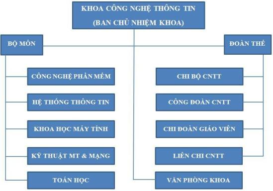

* Ban chủ nhiệm khoa
- Trưởng khoa: TS. Nguyễn Thanh Tùng
Email: tungnt@tlu.edu.vn
Điện thoại: +84-4-38521442
TS. Nguyễn Thanh Tùng phụ trách chung và trực tiếp phụ trách các công tác:
1. Tổ chức, nhân sự
2. Đào tạo đại học và SĐH
3. Công tác hợp tác quốc tế
4. Quy hoạch phát triển, kế hoạch
5. Theo dõi vận hành, cập nhật thông tin Website Khoa CNTT (CSE)
6. Các Hội đồng (Khoa học, Tư vấn, ...)
Đầu mối làm việc với các phòng: TCCB, Đào tạo ĐH&SĐH, Tài vụ, HTQT, HCTH,
- Phó trưởng khoa: ThS. GVC. Phạm Xuân Đồng
Email: dongpx@tlu.edu.vn
ThS. Phạm Xuân Đồng trực tiếp phụ trách các công tác sau:
1. Công tác đoàn, hội sinh viên, công tác cựu sinh viên
2. Xử lý học tập của sinh viên
3. Cố vấn học tập
4. Theo dõi công tác phát triển giáo trình, sách tham khảo.
5. Công tác thi đua, khen thưởng
Đầu mối làm việc với các phòng: CTCT&QLSV, Thư viện, HCTH, Quản trị, Khảo thí & KĐCL
- Phó trưởng khoa: TS. GVC. Đặng Thị Thu Hiền
Email: hiendt@tlu.edu.vn
1. Công tác sinh viên NCKH, Olympic sinh viên
2. Quản trị cơ sở vật chất, các Dự án đầu tư
3. Nghiên cứu khoa học, theo dõi thực hiện các đề tài nghiên cứu khoa học
4. Phát triển quan hệ doanh nghiệp
5. Kiểm định chất lượng
6. Công tác tuyển sinh
7. Hỗ trợ Trưởng khoa trong công tác Đào tạo đại học và SĐH
Đầu mối làm việc: Phòng CTCT&QLSV, Phòng quản lý TB&ĐT, Phòng KHCN, Phòng HCTH
*Văn phòng khoa
ThS. Nguyễn Thị Thu Hương
KS. Nguyễn Khánh Linh
* Khối các đơn vị giảng dạy
- Bộ môn Công nghệ phần mềm
Trưởng BM - TS. Lý Anh Tuấn
- Bộ môn Hệ thống thông tin
Trưởng BM - TS.GVC Đặng Thị Thu Hiền
- Bộ môn Khoa học máy tính
Trưởng BM - TS. Nguyễn Ngọc Doanh
- Bộ môn Kỹ thuật máy tính và Mạng
P. Trưởng BM - TS Phạm Tuấn Minh, ThS. Phạm Thanh Bình
- Bộ môn Tin học và Kỹ thuật tính toán
Trưởng BM - TS Nguyễn Quỳnh Diệp
- Bộ môn Toán học
Trưởng BM- ThS. Phạm Xuân Đồng
* Khối tổ chức đoàn thể
- Đảng bộ bộ phận khoa Công nghệ thông tin
Bí thư Nguyễn Thanh Tùng
- Công đoàn khoa Công nghệ thông tin
Chủ tịch Nguyễn Hữu Thọ
- Chi đoàn giáo viên
Bí Thư Đỗ Lân
- Liên chi Khoa CNTT
* Các phòng thí nghiệm phục vụ công tác đào tạo, nghiên cứu
- Phòng thí nghiệm Khoa học dữ liệu: TS. Đặng Thị Thu Hiền - Trưởng Lab
- Phòng thí nghiệm Mô hình hóa và mô phỏng: TS. Nguyễn Ngọc Doanh - Trưởng Lab
- Phòng thí nghiệm Hệ thống mạng: TS. Phạm Tuấn Minh - Trưởng Lab
Ngoài ra, Khoa còn thành lập một hội đồng Khoa tư vấn cho Trưởng
khoa các công việc đào tạo, nghiên cứu cũng như định hướng phát triển của Khoa CNTT
Ban chủ nhiệm Khoa đóng vai trò chủ đạo trong việc quyết định mọi dự án cũng như các kế hoạch phát triển của Khoa. Văn phòng Khoa là nơi giải quyết tất cả những thủ tục hành chính của Khoa cũng như quản lý tất cả những thông tin của sinh viên và cán bộ trong Khoa CNTT.